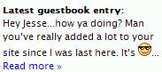

A teaser is a snippet of text from the latest comment entry to “tease” visitors into visiting your guestbook or comments page.
A teaser is usually placed in the sidebar or elsewhere on one or more of your pages. The script that creates it, teaser.php, is in the addons directory. To use it, put it in the TalkBack directory. Edit the the variables at the top of the script if you want different values:
$teaser_length = 150; $teaser_link = "Read more »"; $teaser_title = "Latest guestbook entry:"; $num_comments = 1;Then look at the HTML at the bottom of the script.
<div class='teaser'>
<div class='teaser-title'><strong>$teaser_title</strong></div>
<div class='teaser-snippet'>{$teaser_snippet}...</div>
<div><a href='teaser_page'>$teaser_link</a></div>
</div>
Either add styles to your website stylesheet (not the TalkBack stylesheet) for the classes in the HTML or change the class names to classes that already exist in your stylesheet.
Move teaser.php from the addon directory to the talkback directory.
In all pages that you want the teaser to appear, insert the below code at the point in the page that you want it to appear.
<?php require 'relative path/teaser.php' ?>
If you will be putting the teaser into a page whose file extension is not .php, see the about file extensions section of this user guide.